אילו מסמכים כדאי לערוך עם עורך דין?
כל מסמך שיש לו השלכה כספית או משפחתית לטווח ארוך: צוואות, הסכמי ממון, חוזי מכר, חוזי תעסוקה ותצהירים.

צוואה, הסכם ממון או חוזה הם לא עוד טופס לחתימה. הם קובעים מה יקרה ביום שבו מתעוררת מחלוקת. אני מנסח אותם מתוך היכרות עם האופן שבו מסמכים כאלה נבחנים בבית המשפט, כדי שיחזיקו גם אז.
נוסח מוכן נכתב בשביל מקרה כללי, ולא בשביל המצב שלכם. סעיף שחסר, ניסוח שאפשר לפרש בשתי דרכים או דרישה פורמלית שלא מולאה מתגלים בדרך כלל רק כשכבר מאוחר לתקן. מסמך שנוסח במיוחד בשבילכם עולה הרבה פחות מהסכסוך שהוא מונע.
כל מסמך שיש לו השלכה כספית או משפחתית לטווח ארוך: צוואות, הסכמי ממון, חוזי מכר, חוזי תעסוקה ותצהירים.
לכל סוג מסמך יש דרישות משלו, למשל לגבי אופן החתימה, העדים או האישור הנדרש. מסמך שלא עומד בהן עלול להיפסל בדיוק כשתצטרכו אותו.
לפני שחותמים, ולפני שמתעורר ויכוח. צוואה עורכים כשהכול רגוע, הסכם ממון כשהיחסים טובים, וחוזה לפני שהכסף עובר מיד ליד.
ניסוח ברור ומדויק, שמותאם למצב שלכם ולא לתבנית.
עריכת צוואה שמבטאת בדיוק את הרצון שלכם, ומנוסחת כך שתעמוד גם אם מישהו ינסה לערער עליה. וגם ליווי בענייני ירושה.
הסכם שמסדיר מראש את חלוקת הרכוש בין בני זוג, בצורה הוגנת וברורה לשני הצדדים, וליווי עד לאישורו.
ניסוח ובדיקה של חוזים לפני החתימה: מה אתם מתחייבים לתת, מה מגיע לכם, ומה קורה אם הצד השני לא עומד במילה שלו.
ניסוח תצהירים להגשה לבית המשפט ולרשויות, מדויקים בעובדות ובלשון.
קיבלתם חוזה או הסכם לחתימה? אני עובר עליו, מסביר מה כתוב בו באמת ומסמן מה כדאי לשנות לפני שחותמים.
אם אחד מהסעיפים ברשימה מתאר את המצב שלכם, עדיף לטפל בזה לפני החתימה ולא אחריה. מסמך טוב עורכים כשרגועים, ולא כשכבר יש מחלוקת.
שיחה קצרה שבה אני מבין את הצורך המשפטי שלכם ובודק אם יש בסיס לעבוד יחד.
אתם מרחיבים על המקרה ומציגים מסמכים, ובסוף הפגישה תקבלו ממני חוות דעת ראשונית על הסיכויים.
אחרי בדיקה משפטית: הסיכויים, הערכת שכר טרחה והוצאות, מי צפוי לשאת בהן, וקווי ניהול התיק.
מסדירים את התשלום (מקדמה, או אחוזים בסוף ההליך לפי מה שסוכם), ואני מגיש את כתב התביעה.
אני מנהל את התיק ומלווה אתכם בכל דיון, עד לניצחון, ואם צריך גם בערעור.
”אם אתם מחפשים עורך דין שנלחם בשבילכם ויודע איך לנצח את הבירוקרטיה, הוא הכתובת.“
כאן ייכנס טקסט ההמלצה המלא של הלקוח: מה היה המצב לפני הפנייה, איך התנהל התהליך, ומה הייתה התוצאה.
מומלץ 3 עד 5 שורות, בלשון הלקוח עצמו.
שם הלקוח
”הוא הסביר לי מההתחלה מה הסיכויים, כמה זה יעלה ומה הולך לקרות. בלי הפתעות.“
כאן ייכנס טקסט ההמלצה המלא של הלקוח: מה היה המצב לפני הפנייה, איך התנהל התהליך, ומה הייתה התוצאה.
שם הלקוח
”הרגשתי שיש לי לצידי מישהו שמכיר את השיטה מבפנים.“
כאן ייכנס טקסט ההמלצה המלא של הלקוח: מה היה המצב לפני הפנייה, איך התנהל התהליך, ומה הייתה התוצאה.
שם הלקוח
המחיר תלוי בסוג המסמך ובמורכבות שלו. אחרי שיחה קצרה שבה אבין מה אתם צריכים, תקבלו ממני הצעת מחיר ברורה מראש.
כן. אני עובר על מסמכים קיימים, מסביר מה כתוב בהם ומציע תיקונים לפני החתימה.
זה תלוי במסמך. אחרי שאקבל מכם את כל הפרטים אוכל לומר לכם מראש מתי תקבלו טיוטה לעיון.
צוואה אפשר לשנות או לבטל, כל עוד עורכים את השינוי כנדרש. הסכם אפשר לשנות בהסכמת הצדדים, ובחלק מהמקרים נדרש לכך אישור.
פרטים מזהים של הצדדים, רשימה של הרכוש או הנושאים שהמסמך אמור להסדיר, וכל מסמך קודם שנוגע לעניין.